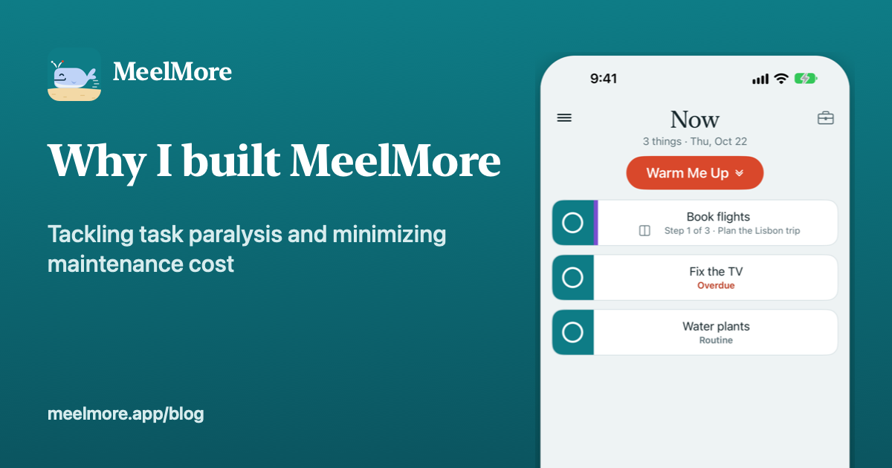

Why I built MeelMore: Tackling Task Paralysis and Minimizing Maintenance Cost

I was diagnosed with ADHD earlier this year, but I've been searching for the perfect productivity app and system my whole life. I never found it, so I built my own.
Every system worked, until it didn't
Over the years I tried a lot of tools and systems, and each had a part that felt like exactly what I needed.
- I liked the idea behind a well-known productivity method: one inbox for everything, instead of tasks scattered across notes, reminders, emails and to-do apps. But I could never keep up with the rest of the system, especially the weekly review.
- I liked a popular to-do app's clean design, and how it put today's tasks front and center and let me sort everything into categories and projects. But the categorized tasks ended up in a black hole, and my "today" tasks ended up covered in red "overdue" labels, which I'd reset every so often and feel guilty about.
- I used apps that specialized in using AI to break down tasks into simpler steps, which felt like what I needed to get unstuck most of the time. But I found their interfaces too chaotic for my brain.
The pattern was always the same. On a bad day I'd miss the daily review. Things would pile up, and it got harder and harder to find the motivation to sort the list out. Tasks would either go "overdue" or disappear into a black hole, and the system would quietly fail.
Two ideas that explained why
Two ideas I learned from Dr. Sasha Hamdani, a psychiatrist and author, helped me understand why my good intentions kept falling apart.
Time blindness. Many ADHD brains see time as either NOW or NOT NOW. A long list of everything I could do today doesn't help me choose; it overwhelms me.
Setup cost versus maintenance cost. I could always find the motivation to set up a new system, with all its categories, projects and folders. That's the setup cost, and I could pay it. What I couldn't pay was the maintenance cost: reviewing, pruning and re-prioritizing every day, especially on the days when I had nothing left.
My systems weren't easy to set up, but I was motivated. The maintenance cost was what I couldn't sustain.
So I built for the lowest maintenance cost
I used my (temporary!) burst of motivation to build an app designed to need as little upkeep as possible, and to keep working on my worst days.
- Just three things on Now. The main screen and the widget show three tasks to do now. Everything else waits on its own Not Now page, out of sight until it matters.
- A Warm Me Up button. When I can't get started, it swaps in my three easiest tasks, so I can get a few quick wins first.
- The phone does the routine maintenance. Apple's on-device AI picks what's on Now from dates, effort and how long things have been waiting, files tasks into categories, and breaks down tasks that seem stuck into simpler steps. When I do have the energy for a review, the list is already triaged.
- No guilt pile. Most dates are plans, not deadlines. When one passes, MeelMore asks what I'd like to do instead of stamping it with a red "overdue" tag. Real deadlines still get one.
- One tool for everything. The interface is simple and free of distractions. There's no account, no syncing, and nothing is sent to an online AI model, so I can use it for work tasks too and keep everything in one place.
So far it's the only app that has stuck for me. Part of that is that I built it: any time something made it hard to keep up, I could fix it.
The app isn't the whole system
I want to be honest about this part. The most important tools I have for staying organized are managing my ADHD (medication, which I'm still tuning) and looking after the basics: sleep, exercise, diet and meditation. When those are in check, I can be productive with almost any system. When they're not, no app will get much done for me.
What MeelMore does is keep me on track on the days that aren't so productive. Tasks don't get lost in a black hole, they don't pile up under guilt-inducing overdue tags, and the system doesn't become useless through neglect. Planning for my worst days, so the system doesn't collapse, has been a huge help.
MeelMore is free on iPhone and iPad, with no account, no ads and no tracking. If any of this sounds familiar, I'd love for you to try it, and to hear what would make it easier to keep up with: support@meelmore.app.